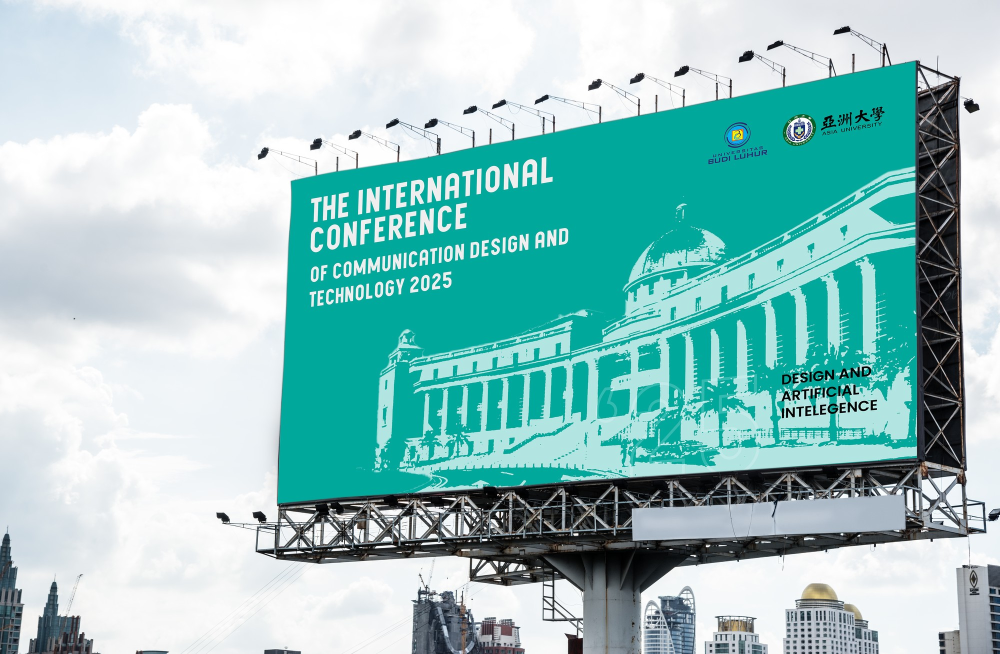
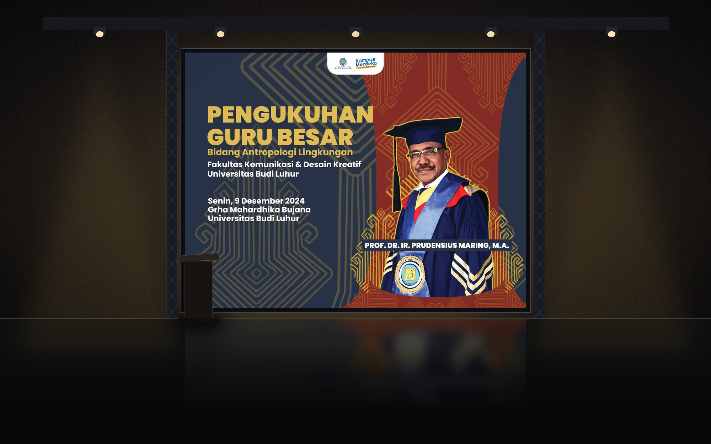
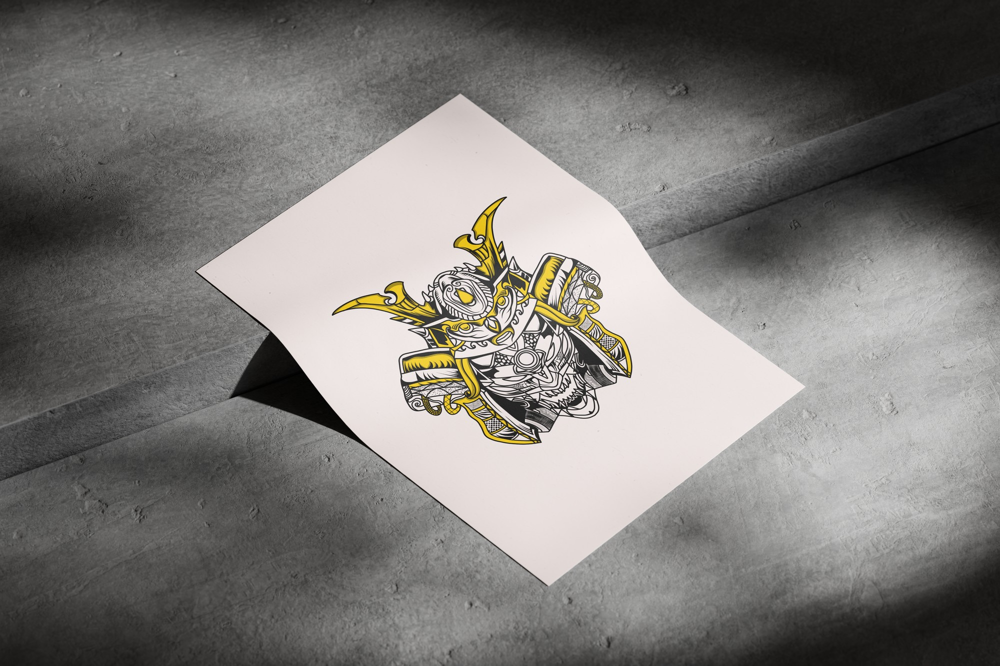

GALANG MUHAMAD ARIFIN

Galang Muhamad Arifin
Visual Direction & AI Content Specialist
Jakarta Selatan, Indonesia
I am a fresh graduate in Visual Communication Design (GPA 3.65) with 2.5 years of hands-on experience as a graphic designer at the campus DKV Lab. I create key visuals, flyers, banners, and promotional designs for events, from concept to final execution.
Skilled in Photoshop and Illustrator, with additional skills in photography and video editing, I also build AI workflows that turn prompts into consistent images and videos. I am looking for opportunities in graphic design and AI-driven content creation.
Exhibition backdrops, event identity, & stage installations.
Systematic grids, carousel feeds, & Instagram templates.
Generative consistency & production acceleration.
Skills & Software
Industry-standard graphic design software proficiency coupled with AI pipelines for rapid visual acceleration.
Graphic, UI & 3D Design
Key visuals, vector illustration, layout systems, UI prototyping, and 3D visual exploration.
Photography & Video Editing
Team Leader Event Photography (Photo Rally on Transport), color grading, and video editing.
AI Visual Workflows
Orchestrating generative AI pipelines from prompts to consistent visual narratives and concepts.
Experience & Education
Complete leadership and design contributions across institutional, creative, and university events.
Team Leader Event Photography
Photo Rally on Transport
Key Visual EUFORATIVE Final Project Exhibition
Universitas Budi Luhur
Graduation 2024 Design Team
Universitas Budi Luhur
Ordik Bluphoria 2024 Design Team
Universitas Budi Luhur
MORPH Final Project Exhibition Design Team
Universitas Budi Luhur
Key Visual DKV Instagram Theme: WORK, THRIVE, FUNKY
Universitas Budi Luhur
Designer — ICCDT (International Conference of Communication Design and Technology)
Universitas Budi Luhur
Design Leader — KKN Tematik Merajut Nusantara III 2025
Universitas Budi Luhur
Designer — World Clean Up Day
Bank Sampah Universitas Budi Luhur
Designer — Sweetpreneur Journey Event (Dapur Coklat)
Universitas Budi Luhur
Creative Concept — FANTASIARASA
DKV Universitas Budi Luhur
Designer — Professor Inauguration (Pengukuhan Guru Besar)
Universitas Budi Luhur
Universitas Budi Luhur
Bachelor of Visual Communication Design (S1 DKV)
Petukangan Utara, Jakarta Selatan
SMK KARTIKA X-2
Vocational High School
Pesanggrahan, Jakarta Selatan
Events & Works Gallery
Each event houses complete design documentation. Click any event card to view the full multi-photo showcase and design breakdown.
Photography Collection
Selected event photography & Photo Rally on Transport works are currently being curated and will be added soon.
 EUFORATIVE
8 Artworks
EUFORATIVE
8 Artworks
EUFORATIVE — Final Project Exhibition
Annual DKV visual language adapted from Instagram key visuals to large-scale exhibition backdrops and banners.
 WORK, THRIVE, FUNKY
5 Artworks
WORK, THRIVE, FUNKY
5 Artworks
WORK, THRIVE, FUNKY — DKV Instagram
Led visual direction from concept to execution, translating expressive themes into bold social media identity.
 KKN TEMATIK NTT
15 Artworks
KKN TEMATIK NTT
15 Artworks
KKN Tematik Nusantara III (NTT)
Complete visual identity combining regional ikat weaving motifs and coastal landscapes with structured layouts.
 WORLD CLEANUP DAY
6 Artworks
WORLD CLEANUP DAY
6 Artworks
World Clean Up Day Campaign
Custom typography as illustrative containers for eco-iconography with a fresh, sustainable green gradient palette.

ICCDT 2025 6 ArtworksICCDT 2025 — International Conference
International conference visual identity featuring outdoor billboards, auditorium LED stages, and Call for Paper media.

PENGUKUHAN GURU BESAR 4 ArtworksProfessor Inauguration Series
Ceremonial auditorium stage backdrops, standing banners, and hardcover speech booklets for UBL professors.
 UBL INSTITUTIONAL
8 Artworks
UBL INSTITUTIONAL
8 Artworks
Wisuda, PANTAREI & UBL Systems
Graduation JCC backdrop, 45th anniversary banners, PANTAREI journals, MCUT promos, & event merch lanyards.

BRANDING & VISUAL LAB 7 ArtworksBrand, Editorial & Apparel Lab
Samurai vector art prints, ethnic streetwear sweatshirts, editorial magazine spreads, and illustrated card systems.
Thank You — Let's Create Together
Thank you for exploring my creative portfolio. I am eager to collaborate and open for full-time opportunities, freelance key visual projects, brand identity, and creative collaborations. Let's connect!